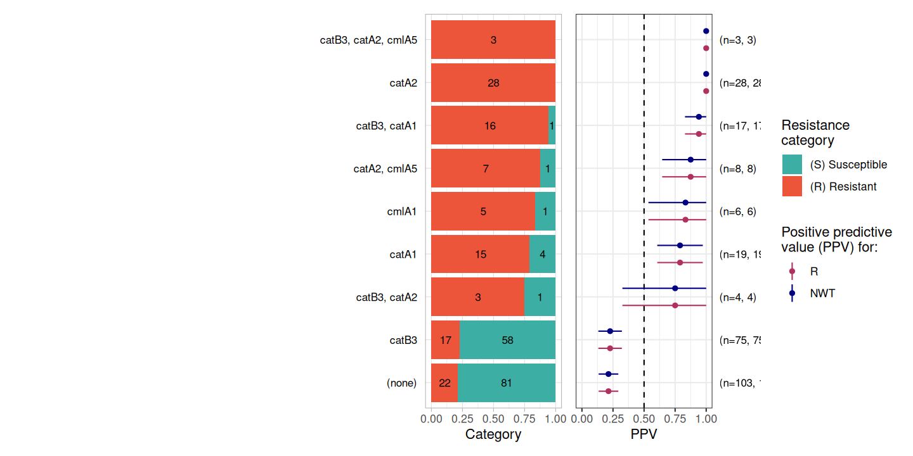
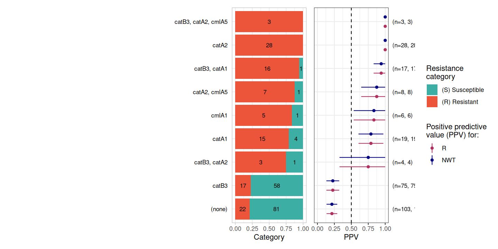
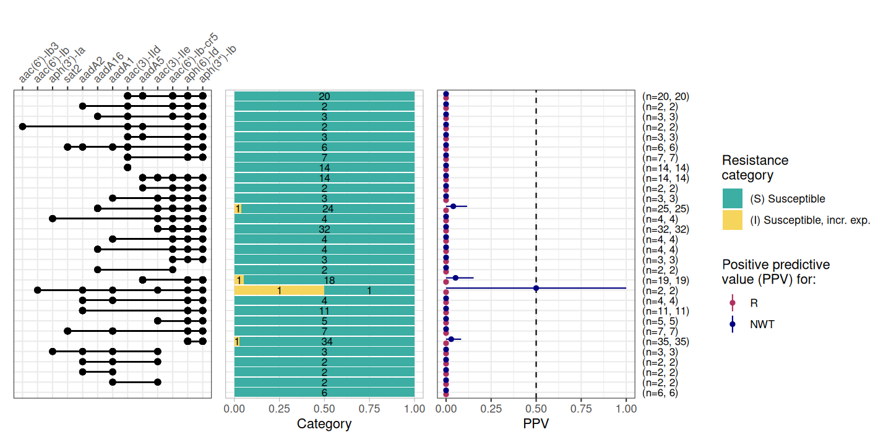
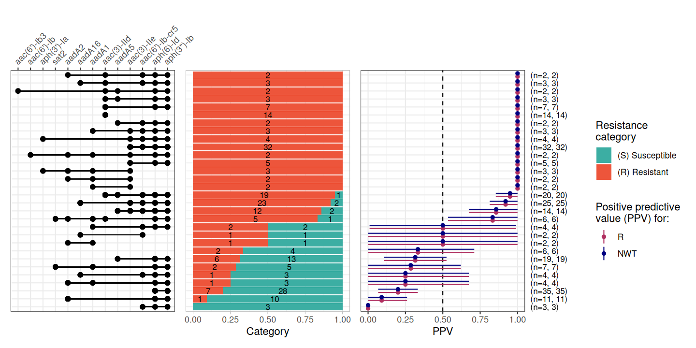
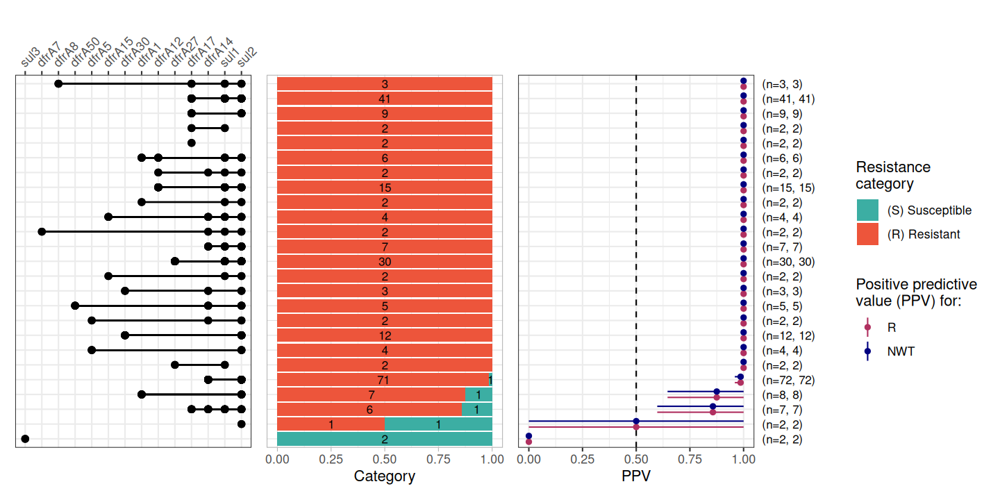
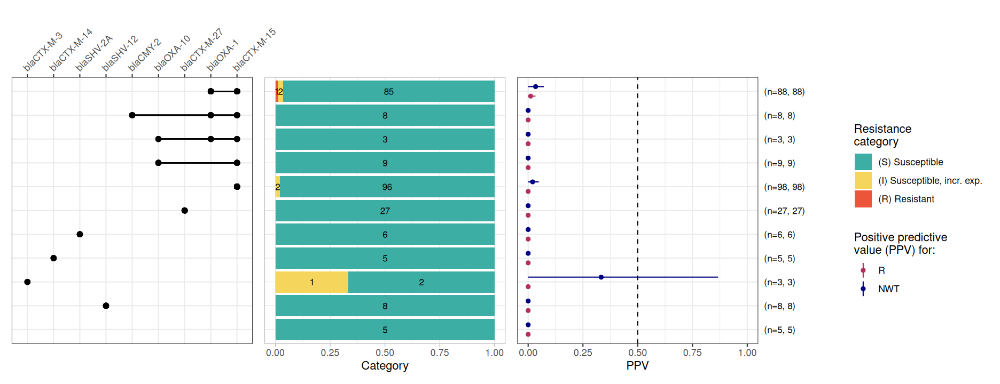
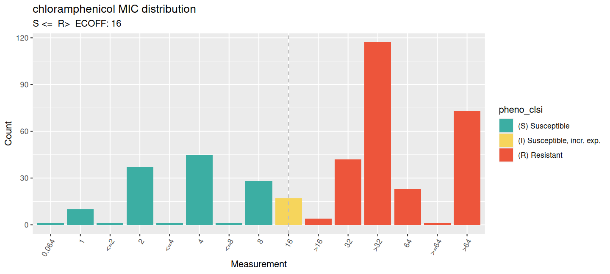
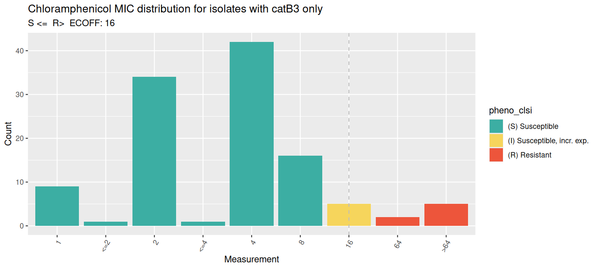
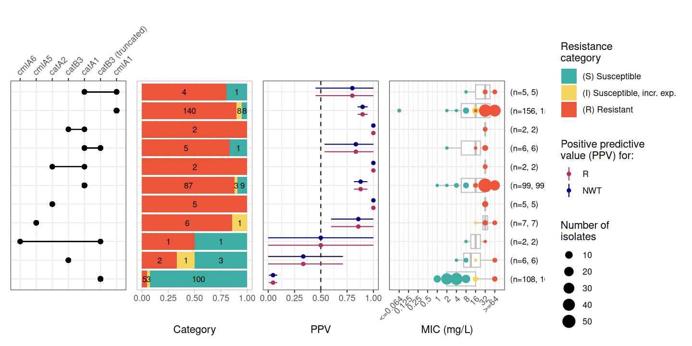
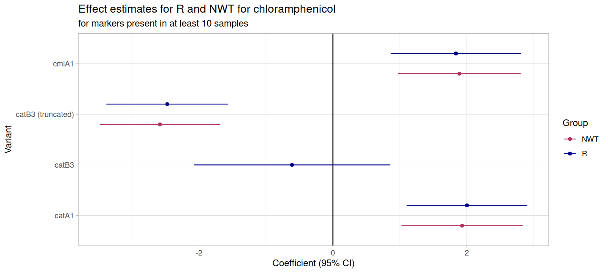

Analysing the impact of deletion variants on susceptibility
Richard Goodman
Source:vignettes/DeletionVariantsCatB3.Rmd
DeletionVariantsCatB3.Rmd1. Introduction
Infections caused by extended-spectrum beta-lactamase (ESBL)-producing Enterobacterales (ESBL-E) are a critical global health threat, often leaving clinicians with few treatment options beyond last-resort carbapenems.
In Malawi, first-line treatment for sepsis shifted from chloramphenicol (CHL) to ceftriaxone (CRO) in 2004, this was followed by a notable re-emergence of CHL susceptibility as its clinical use declined (Musicha et al., 2017).
A recent study (Graf et al., 2024) revealed that this “resensitisation” is frequently driven by the stable degradation of resistance genes rather than their total loss from the population. Specifically, insertion sequences like IS26 and IS5 have been identified as key drivers; IS26 causes truncations in catB3 (creating the non-functional variant catB4), while IS5 can integrate into the promoter of catA1, effectively silencing its transcription.
Here we use a matched phenotype/genotype dataset used in the (Graf et al., 2024) study and publicly available datasets from NCBI to investigate these genotype-phenotype mismatches with the AMRgen package.
1.1 Sourcing data from the DASSIM study
One of the datasets used to highlight genotype-phenotype mismatches in the Graf et al., 2024 paper was the DASSIM dataset (Lewis et al. 2022).
The DASSIM study was an observational study of patients with sepsis admitted to Queen Elizabeth Central Hospital, Blantyre, Malawi. The aim was to understand the drivers of acquisition and long term carriage of ESBL-E in sepsis survivors. The DASSIM dataset contains faecal samples from community patients, inpatients and sepsis patients.
All genomic data was short-read sequenced on Illumina platforms at the Wellcome Sanger Institute.
Antimicrobial sensitivity testing (AST) was carried out on a subset of isolates using the disc-diffusion method using British Society for Antimicrobial Chemotherapy (BSAC) guidelines (https://bsac.org.uk/). AST was carried out for meropenem, amikacin, chloramphenicol, ciprofloxacin, co-trimoxazole and gentamicin.
However this dataset only contains the interpreted phenotype data (S/I/R) which is what we work with in this example.
1.1a DASSIM Genotype data
We downloaded genome data from the following papers:
Colonization dynamics of extended-spectrum beta-lactamase-producing Enterobacterales in the gut of Malawian adults Nat. Microbiol. 7, 1593–1604 (2022). Joseph M Lewis, Madalitso Mphasa, Rachel Banda, Matthew Beale, Eva Heinz, Jane Mallewa, Christopher Jewell, Nicholas R Thomson, Nicholas A Feasey
Genomic analysis of extended-spectrum beta-lactamase (ESBL) producing Escherichia coli colonising adults in Blantyre, Malawi reveals previously undescribed diversity Microb. Genom. 9, mgen001035 (2023). Joseph M Lewis, Madalitso Mphasa, Rachel Banda, Matthew Beale, Jane Mallewa, Catherine Anscombe, Allan Zuza, Adam P Roberts, Eva Heinz, Nicholas Thomson, Nicholas A Feasey
Genomic and antigenic diversity of colonising Klebsiella pneumoniae isolates mirrors that of invasive isolates in Blantyre, Malawi Microb. Genom. 8, 000778 (2022). Joseph M Lewis, Madalitso Mphasa, Rachel Banda, Matthew Beale, Jane Mallewa, Eva Heinz, Nicholas Thomson, Nicholas A Feasey
The genomes are deposited in the European Nucleotide Archive (ENA) under the project IDs PRJEB26677 and PRJEB36486.
The fastq files were downloaded, processed with cutadapt, filtered to >Q20 with FASTQC, and assembled with SPAdes v3.11.1 as described in Graf et al., 2024.
Antimicrobial resistance genes (ARGs) were called with AMRFinderPlus
v4.0.23 to produce the data frame [DASSIM_geno] which is included in the
AMRgen package as a data object DASSIM_geno.
1.1b DASSIM Phenotype data
We downloaded the AST data from the blantyreESBL Github from Dr. Joe Lewis at https://github.com/joelewis101/blantyreESBL/raw/refs/heads/main/data/btESBL_AST.rda.
This is included in the AMRgen package as a data object:
btESBL_AST.
Additional metadata relating to the isolates can be found in Supplementary Data 1 of the following paper:
Molecular mechanisms of re-emerging chloramphenicol susceptibility in extended-spectrum beta-lactamase-producing Enterobacterales. Nat Commun 15, 9019 (2024). Fabrice E Graf, Richard N Goodman, Sarah Gallichan, Sally Forrest, Esther Picton-Barlow, Alice J Fraser, Minh-Duy Phan, Madalitso Mphasa, Alasdair T M Hubbard, Patrick Musicha, Mark A Schembri, Adam P Roberts, Thomas Edwards, Joseph M Lewis, Nicholas A Feasey.
This data is included in the AMRgen package as data object:
DASSIM_pheno_raw.
2. Analysis
2.2 Format the phenotype data
The phenotype data in btESBL_AST needs to be reformated
to long format, and sequence identifiers imported from
DASSIM_pheno_raw so we can match the phenotype data to the
genotypes.
# Convert the S/I/R phenotype data to long format for easy use with AMRgen functions
DASSIM_pheno <- btESBL_AST %>%
pivot_longer(
names_to = "drug_agent",
values_to = "pheno",
cols = "amikacin":"meropenem"
) %>%
mutate( # Standardise the terms to S, I, and R
pheno = case_when(
tolower(pheno) %in% c("sensitive", "susceptible", "s") ~ "S",
tolower(pheno) %in% c("intermediate", "i") ~ "I",
tolower(pheno) %in% c("resistant", "r") ~ "R",
TRUE ~ NA_character_ # Any other unrecognized values become NA
)
) %>%
mutate(pheno = AMR::as.sir(pheno))
# add the sequence identifier from DASSIM_pheno_raw so we can match to genotype data
DASSIM_pheno <- DASSIM_pheno %>%
left_join(DASSIM_pheno_raw %>% select(Strain_ID, seq, ST), join_by("supplier_name" == "Strain_ID")) %>%
rename(id = seq) %>%
relocate(id) %>%
mutate(mic = NA)
head(DASSIM_pheno)
#> # A tibble: 6 × 7
#> id supplier_name organism drug_agent pheno ST mic
#> <chr> <chr> <chr> <chr> <sir> <dbl> <lgl>
#> 1 ERR3426052 CAB10K E. coli amikacin S 656 NA
#> 2 ERR3426052 CAB10K E. coli chloramphenicol S 656 NA
#> 3 ERR3426052 CAB10K E. coli ciprofloxacin S 656 NA
#> 4 ERR3426052 CAB10K E. coli cotrimoxazole R 656 NA
#> 5 ERR3426052 CAB10K E. coli gentamicin S 656 NA
#> 6 ERR3426052 CAB10K E. coli meropenem S 656 NA2.3 Check the genotype data
head(DASSIM_geno)
#> # A tibble: 6 × 31
#> Name gene mutation node marker marker.label drug_agent drug_class
#> <chr> <chr> <chr> <chr> <chr> <chr> <ab> <chr>
#> 1 26141_1_134 aadA5 NA aadA5 aadA5 aadA5 STR1 Aminoglyc…
#> 2 26141_1_134 dfrA17 NA dfrA… dfrA17 dfrA17 NA Trimethop…
#> 3 26141_1_134 arr NA arr arr arr:- RFM Rifamycins
#> 4 26141_1_134 catB3 NA catB3 catB3 catB3 CHL Phenicols
#> 5 26141_1_134 blaOXA-1 NA blaO… blaOX… blaOXA-1 NA Cephalosp…
#> 6 26141_1_134 aac(6')-… NA aac(… aac(6… aac(6')-Ib-… AMK Aminoglyc…
#> # ℹ 23 more variables: `Protein id` <lgl>, `Contig id` <chr>, Start <dbl>,
#> # Stop <dbl>, Strand <chr>, `Gene symbol` <chr>, `Element name` <chr>,
#> # Scope <chr>, Type <chr>, Subtype <chr>, Class <chr>, Subclass <chr>,
#> # Method <chr>, `Target length` <dbl>, `Reference sequence length` <dbl>,
#> # `% Coverage of reference` <dbl>, `% Identity to reference` <dbl>,
#> # `Alignment length` <dbl>, `Closest reference accession` <chr>,
#> # `Closest reference name` <chr>, `HMM accession` <lgl>, …2.4 PPV Analysis of DASSIM dataset
The function ppv() predicts positive predictive value of
genetic markers (i.e. genes/mutations) for resistance among strains that
carry these markers.
We will look at the markers associated with the antibiotics used in the AST assays for the DASSIM study.
- chloramphenicol
- amikacin
- gentamicin
- cotrimoxazole
- meropenem
For each of these first we create a binary matrix using
get_binary_matrix() which takes our genotype (AMRfinderplus
etc.) and phenotype (AST profile) datasets.
We can then plot the PPV graphs using ppv()
# Get binary matrix
DASSIM_CHL_bin_mat <- get_binary_matrix(DASSIM_geno, DASSIM_pheno, antibiotic = "chloramphenicol", sir_col = "pheno")
# Plot ppv
DASSIM_CHL_PPV <- ppv(DASSIM_CHL_bin_mat, antibiotic = "Chloramphenicol", sir_col = "pheno", upset_grid = FALSE)
We can see that oqx genes on their own don’t impact
resistance. As they are common, they obscure the impact of other genes,
so we can remove them using select() to focus on the genes
of interest for chloramphenicol.
DASSIM_CHL_nooqx_bin_mat <- DASSIM_CHL_bin_mat %>% select(!contains("oqx"))
DASSIM_CHL_nooqx_PPV <- ppv(DASSIM_CHL_nooqx_bin_mat, antibiotic = "Chloramphenicol", sir_col = "pheno", upset_grid = FALSE)
This result clearly shows how the detection of catB3 is not a good predictor of resistance, whereas detection of catA2 is.
Now let’s check how well aminoglycoside markers predict resistance to amikacin and gentamicin.
DASSIM_AMK_bin_mat <- get_binary_matrix(DASSIM_geno, DASSIM_pheno, antibiotic = "amikacin", sir_col = "pheno")
DASSIM_AMK_PPV <- ppv(DASSIM_AMK_bin_mat, antibiotic = "amikacin", sir_col = "pheno", upset_grid = TRUE)
DASSIM_GEN_bin_mat <- get_binary_matrix(DASSIM_geno, DASSIM_pheno, antibiotic = "gentamicin", sir_col = "pheno")
DASSIM_GEN_PPV <- ppv(DASSIM_GEN_bin_mat, antibiotic = "gentamicin", sir_col = "pheno", upset_grid = TRUE)
Here we see many of the aminoglycoside-associated resistance genes detected in these genomes are predictive of resistance to gentamicin, but none are associated with amikacin resistance. This is because amikacin is a semi-synthetic drug with an addition of a specific side chain, called the L-hydroxyaminobutyryl amide (HABA) group. This HABA side chain blocks the Aminoglycoside-Modifying Enzymes (AMEs) from reaching the sites on the molecule where they would normally attach their deactivating tags.
Now let’s check how well markers associated with trimethoprims or sulfonamides predict resistance to co-trimoxazole.
DASSIM_SXT_bin_mat <- get_binary_matrix(DASSIM_geno, DASSIM_pheno, antibiotic = "cotrimoxazole", sir_col = "pheno")
DASSIM_SXT_PPV <- ppv(DASSIM_SXT_bin_mat, antibiotic = "cotrimoxazole", sir_col = "pheno", upset_grid = TRUE)
Co-trimoxazole is a combination drug made of sulfamethoxazole and trimethoprim. It is prescribed prophylactically in Malawi for HIV-positive individuals (Everett et al. 2011). Since it is a combination drug it requires both Sulfamethoxazole resistance genes (e.g., sul) and Trimethoprim resistance genes (e.g., dfrA).
Meropenem is a last resort carbapenem antibiotic. ppv() by default returns all markers associated with beta-lactam resistance, for comparison with meropenem phenotypes. However while many beta-lactamases were detected, none are known carbapenemases (e.g., blaNDM, blaKPC, blaVIM, blaIMP, blaOXA-48-like). Consistent with this only a single isolate, carrying multiple beta-lactamases, was phenotyped as resistant to meropenem.
DASSIM_MEM_bin_mat <- get_binary_matrix(DASSIM_geno, DASSIM_pheno, antibiotic = "meropenem", sir_col = "pheno")
DASSIM_MEM_PPV <- ppv(DASSIM_MEM_bin_mat, antibiotic = "meropenem", sir_col = "pheno", upset_grid = TRUE)
This analysis highlights how AMRgen can be used to explore genotype/phenotype associations for specific genetic markers related to a variety of antibiotics.
Next we’ll explore the chloramphenicol susceptibility associated with the catB3 gene with more functions of the AMRgen package. For this we need raw AST data (e.g., MIC or disc diffusion), so we will go to NCBI to download public datasets.
3. Analysis of publicly available phenotype and genotype data for chloramphenicol
3.1 Importing public data from NCBI
The National Center for Biotechnology Information (NCBI) provides tools for analysing antimicrobial resistance (AMR).
Phenotypes: NCBI AST
The Antibiotic Susceptibility Test (AST) Browser serves as a centralised resource for viewing and filtering phenotypic susceptibility data, allowing researchers to correlate specific bacterial isolates with their phenotypic resistance profiles.
AST data can be retrieved directly from NCBI using the AMRgen
functions download_ncbi_ast() (slow but does not require
authorisation) or query_ncbi_bq_ast() (very fast, requires
a Google Cloud account), or via the NCBI AST Browser. For more details
see the [DownloadGenoPhenoData] vignette.
# Download E. coli AST data from NCBI, filtering for chloramphenicol, and re-interpret with CLSI breakpoints
ecoli_ast_ncbi_via_biosample <- download_ncbi_ast(
species = "E. coli",
antibiotic = "chloramphenicol",
reformat = TRUE,
interpret_clsi = TRUE
)
# Download E. coli AST data from NCBI via Google Cloud, filtering for chloramphenicol, and re-interpret with CLSI breakpoints
install.packages("bigrquery")
library(bigrquery)
bigrquery::bq_auth()
# replace xxx with your project id
ecoli_ast_ncbi_via_cloud <- query_ncbi_bq_ast(
taxgroup = "E.coli and Shigella",
antibiotic = "chloramphenicol",
project_id = "xxx"
)
ecoli_ast_ncbi_via_cloud_interpreted <- import_ncbi_ast(ecoli_ast_ncbi_via_cloud,
interpret_clsi = TRUE
)Navigate to the NCBI Antibiotic Susceptibility Test (AST) Browser in a web browser and search for
chloramphenicol AND Escherichia
https://www.ncbi.nlm.nih.gov/pathogens/ast#chloramphenicol%20AND%20Escherichia
Save this as a tsv file:
CHL_Ecoli_asts.tsv, and import it using the AMRgen function
import_pheno.
# import phenotype data
NCBI_Ecoli_AST_chl <- import_pheno("data-raw/CHL_Ecoli_asts.tsv", format = "ncbi")A copy of this imported data (downloaded March 2026) is included in
AMRgen as data frame NCBI_Ecoli_AST_chl.
head(NCBI_Ecoli_AST_chl)
#> # A tibble: 6 × 25
#> id drug_agent mic disk guideline method platform pheno_provided
#> <chr> <ab> <mic> <dsk> <chr> <chr> <chr> <chr>
#> 1 SAMN50215339 CHL <=0.03 NA EUCAST broth … NA not defined
#> 2 SAMN50215184 CHL 4.00 NA EUCAST broth … NA not defined
#> 3 SAMN50215166 CHL 2.00 NA EUCAST broth … NA not defined
#> 4 SAMN50215662 CHL <=0.03 NA EUCAST broth … NA not defined
#> 5 SAMN50215818 CHL 2.00 NA EUCAST broth … NA not defined
#> 6 SAMN50215473 CHL 1.00 NA EUCAST broth … NA not defined
#> # ℹ 17 more variables: spp_pheno <mo>, `Organism group` <chr>,
#> # `Scientific name` <chr>, `Isolation type` <chr>, Location <chr>,
#> # `Isolation source` <chr>, Isolate <chr>, Antibiotic <chr>,
#> # `Resistance phenotype` <chr>, `Measurement sign` <chr>, `MIC (mg/L)` <dbl>,
#> # `Disk diffusion (mm)` <dbl>, `Laboratory typing platform` <chr>,
#> # Vendor <chr>, `Laboratory typing method version or reagent` <chr>,
#> # `Testing standard` <chr>, `Create date` <dttm>Genotypes: MicroBIGG-E
The Microbial Browser for Identification of Genetic and Genomic Elements (MicroBIGG-E) is a specialised portal within the NCBI Pathogen Detection system that enables users to query a database of over 46,000 isolates to identify specific AMR genes and point mutations.
Navigate to the NCBI Pathogen Detection Microbial Browser for Identification of Genetic and Genomic Elements (MicroBIGG-E) in a web browser and search for:
chloramphenicol AND Escherichia
https://www.ncbi.nlm.nih.gov/pathogens/microbigge/#chloramphenicol%20AND%20Escherichia
Save this as a tsv file:
CHL-R_Ecoli_microbigge.tsv, and import it using the AMRgen
function import_gheno.
# import phenotype data
MICROBIGGE_Ecoli_CHLR <- import_geno("data-raw/CHL-R_Ecoli_microbigge.tsv", format = "amrfp", sample_col = "BioSample")A copy of this imported data (downloaded March 2026) is included in
AMRgen as data frame MICROBIGGE_Ecoli_CHLR.
head(MICROBIGGE_Ecoli_CHLR)
#> # A tibble: 6 × 27
#> id marker gene mutation drug_agent drug_class `variation type` node
#> <chr> <chr> <chr> <chr> <ab> <chr> <chr> <chr>
#> 1 SAMN008293… catA1 catA1 NA CHL Phenicols Gene presence d… catA1
#> 2 SAMN018857… catA1 catA1 NA CHL Phenicols Gene presence d… catA1
#> 3 SAMN026875… catA1 catA1 NA CHL Phenicols Gene presence d… catA1
#> 4 SAMN028020… catA1 catA1 NA CHL Phenicols Gene presence d… catA1
#> 5 SAMN028018… catB3 catB3 NA CHL Phenicols Inactivating mu… catB3
#> 6 SAMN031982… catA1 catA1 NA CHL Phenicols Gene presence d… catA1
#> # ℹ 19 more variables: marker.label <chr>, `Scientific name` <chr>,
#> # Protein <chr>, Isolate <chr>, Contig <chr>, Start <dbl>, Stop <dbl>,
#> # Strand <chr>, `Element symbol` <chr>, `Element name` <chr>, Type <chr>,
#> # Scope <chr>, Subtype <chr>, Class <chr>, Subclass <chr>, Method <chr>,
#> # `% Coverage of reference` <dbl>, `% Identity to reference` <dbl>,
#> # subclass_to_parse <chr>3.2 Filter data to samples with chloramphenicol phenotype data, and chloramphenicol genotypic markers detected
# filter AST data, re-interpret using CLSI breakpoints
AST_pheno <- NCBI_Ecoli_AST_chl %>%
filter(id %in% MICROBIGGE_Ecoli_CHLR$id) %>%
interpret_ast(interpret_clsi = TRUE)
#> Warning: There was 1 warning in `mutate()`.
#> ℹ In argument: `across(...)`.
#> Caused by warning:
#> ! Some MICs were converted to the nearest higher log2 level, following the
#> CLSI interpretation guideline.
MB_CHLR_geno <- MICROBIGGE_Ecoli_CHLR %>% filter(id %in% NCBI_Ecoli_AST_chl$id)
# check how many samples we have
length(unique(AST_pheno$id))
#> [1] 410
# check the genes
MB_CHLR_geno %>% count(gene)
#> # A tibble: 6 × 2
#> gene n
#> <chr> <int>
#> 1 catA1 213
#> 2 catA2 16
#> 3 catB3 278
#> 4 cmlA1 350
#> 5 cmlA5 12
#> 6 cmlA6 6
# filter to find samples with catB3
MB_CATB3_geno <- MB_CHLR_geno %>% filter(gene == "catB3")
MB_nonCATB3_geno <- MB_CHLR_geno %>% filter(gene != "catB3")
# filter AST data to samples with catB3 and no other chloramphenicol markers
AST_CATB3_pheno <- AST_pheno %>%
filter(id %in% MB_CATB3_geno$id) %>%
filter(!(id %in% MB_nonCATB3_geno$id))
# check how many samples we have with catB3
length(unique(AST_CATB3_pheno$id))
#> [1] 1163.3 Exploring chloramphenicol phenotype distributions with
assay_by_var()
Now we can explore phenotype distributions based on MIC data using
the assay_by_var() function.
We visualise the MIC distribution with assay_by_var() on
all chloramphenicol AST data.
AST_pheno <- AST_pheno %>%
mutate(across(all_of("mic"), ~ AMR::as.mic(.x, round_to_next_log2 = TRUE)))
assay_by_var(
pheno_table = AST_pheno,
antibiotic = "chloramphenicol",
measure = "mic",
colour_by = "pheno_clsi",
species = "Escherichia coli"
)
Next we can visualise the MIC distribution with
assay_by_var() on the AST data of isolates containing the
catB3 gene only
# CATB3 specific
assay_by_var(
pheno_table = AST_CATB3_pheno,
antibiotic = "CHL",
measure = "mic",
colour_by = "pheno_clsi",
species = "Escherichia coli"
) +
labs(title = "Chloramphenicol MIC distribution for isolates with catB3 only")
The distribution shifts to the right and towards sensitive for isolates with the catB3 gene only, when compared to those with any chloramphenicol-associated gene.
We can then split the plot based on how truncated the catB3 gene is as a percentage of coverage with 100% aligning across the entire length of the gene and <100% showing a truncation or deletion (see Graf et al., 2024 for more about the IS26 mediated truncation of catB3)
# add genotype data to the phenotype table for isolates with catB3 alone
AST_CATB3_pheno_2 <- MB_CATB3_geno %>%
select(id, gene, `% Coverage of reference`) %>%
distinct(id, .keep_all = TRUE) %>%
right_join(AST_CATB3_pheno, by = "id")
# check coverage, all values are either 100% or 66.7-70%
AST_CATB3_pheno_2 %>% count(`% Coverage of reference`)
#> # A tibble: 4 × 2
#> `% Coverage of reference` n
#> <dbl> <int>
#> 1 66.7 1
#> 2 69.5 25
#> 3 70 84
#> 4 100 6
# define a grouping variable 'truncation' indicating samples with full coverage vs <=70%
AST_CATB3_pheno_3 <- AST_CATB3_pheno_2 %>%
mutate(truncation = ifelse(`% Coverage of reference` > 70, "100% catB3 coverage", "<= 70 % catB3 coverage"))
# plot the MIC distribution for these 2 groups
MIC_dist_by_cov <- assay_by_var(
pheno_table = AST_CATB3_pheno_3,
antibiotic = "CHL",
measure = "mic",
colour_by = "pheno_clsi",
species = "Escherichia coli",
facet_var = "truncation"
) +
labs(
title = " ",
subtitle = " ",
x = "MIC measurement",
fill = "phenotype (CLSI)"
)
MIC_dist_by_cov
# check counts and median MIC per group
AST_CATB3_pheno_3 %>%
group_by(truncation) %>%
summarise(median = median(mic, na.rm = T), n = n(), R = sum(pheno_clsi == "S"))
#> # A tibble: 2 × 4
#> truncation median n R
#> <chr> <dbl> <int> <int>
#> 1 100% catB3 coverage 12 6 3
#> 2 <= 70 % catB3 coverage 4 110 100As we can see, isolates with truncated catB3 genes (n=110) have median MIC of 4 mg/L, and most (n=100) were classed as susceptible (MIC <16 mg/L). In contrast, those with full-length catB3 genes (n=6) had higher values, and only 3 were classed as susceptible.
3.4 Analysing genotype and phenotype data with
ppv()
Now let’s look at the geno-pheno associations across all the isolates
with matched data. We first build a binary matrix using the genotype and
phenotype tables as input with get_binary_matrix()
Then we can view it as an upset grid, with a upset plot, SIR stacked
barplot and positive predictive value (ppv) using the ppv()
function.
MB_CHLR_geno <- MB_CHLR_geno %>%
mutate(marker = ifelse(marker == "catB3" & `% Coverage of reference` < 100, "catB3 (truncated)", marker))
CHL_bin_mat <- get_binary_matrix(MB_CHLR_geno,
AST_pheno,
antibiotic = "CHL",
drug_class_list = c("Phenicols"),
sir_col = "pheno_clsi",
keep_assay_values = TRUE
)
CHL_PPV <- ppv(CHL_bin_mat,
antibiotic = "Chloramphenicol",
drug_class_list = c("Phenicols"),
sir_col = "pheno_clsi",
upset_grid = TRUE,
assay = "mic",
plot_assay = TRUE,
order = "value"
)
## 3.5 Logistic regressionWe can plot a coefficient plot using the amr_logistic()
function to show the statistical relationship between chloramphenicol
resistance genes and phenotypic resistance to chloramphenicol.
We just need the binary matrix as input (from
get_binary_matrix()) and we can define the antibiotic, the
column containing the ecoff and a threshold for the number of samples a
marker is present in.
CHL_logist <- amr_logistic(
binary_matrix = CHL_bin_mat,
antibiotic = "chloramphenicol",
ecoff_col = "ecoff",
maf = 10,
single_plot = TRUE
)
# model coefficients
CHL_logist$modelR
#> # A tibble: 5 × 5
#> marker est ci.lower ci.upper pval
#> <chr> <dbl> <dbl> <dbl> <dbl>
#> 1 (Intercept) 0.295 -0.555 1.14 0.496
#> 2 cmlA1 1.84 0.866 2.81 0.000211
#> 3 catA1 2.00 1.10 2.91 0.0000134
#> 4 catB3 -0.611 -2.08 0.857 0.415
#> 5 catB3 (truncated) -2.47 -3.38 -1.56 0.0000000980This plot shows that both catA1 and cmlA1 have a strong positive association with phenotypic resistance whereas truncated catB3 has a strong negative association with resistance (i.e. a stronger association with susceptibility to chloramphenicol).
Experimental evolution analysis by Graf et al., 2024 suggested that these catB3 silencing events are highly stable under antibiotic pressure, reinforcing the potential for chloramphenicol to be reintroduced as a targeted reserve agent for ESBL-E infections in low-resource settings.